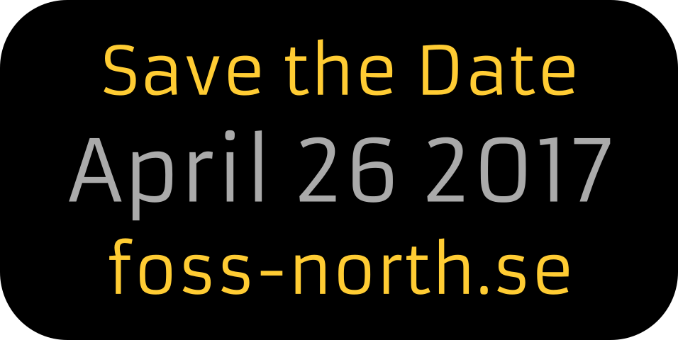

Toggle navigation
Home
Program
(current)
Speakers and Talks
Call for Sponsors
More foss events

Program
This is the provisional program for foss-north 2017.
All sessions include time for Q&A and to move between the rooms.
Asperö
Ellös
7.30 - 7.45
Breakfast and Registration
7.45 - 8.00
8.00 - 8.15
8.15 - 8.30
8.30 - 8.45
Keynote Session
Lydia Pintscher
-
Knut Yrvin
-
Carl Josefsson
8.45 - 9.00
9.00 - 9.15
9.15 - 9.30
9.30 - 9.45
Open Source Silicon : Where software ends and hardware begins
Olof Kindgren
ACME - Not just for rockets anymore
Magnus Hagander
9.45 - 10.00
10.00 - 10.15
10.15 - 10.30
10.30 - 10.45
Why values, motivation and team culture is what really creates innovation
Niklas Lindhardt
AsteroidOS under the hood
Florent Revest
10.45 - 11.00
11.00 - 10.15
Encrypting at the Source - Protection from Creation
The Zifra Team
11.15 - 11.30
11.30 - 11.45
Open Source on Internet of things
Knut Yrvin
Actionable Agile Tools
Jeff Campbell
11.45 - 12.00
12.00 - 12.15
Lunch
12.15 - 12.30
12.30 - 12.45
12.45 - 13.00
13.00 - 13.15
13.15 - 13.30
13.30 - 13.45
Reproducible builds
Chris Lamb
Flatpak: Apps on the linux desktops
Alexander Larsson
13.45 - 14.00
14.00 - 14.15
14.15 - 14.30
14.30 - 14.45
The UX of UX - Behind the scenes of effectively designing in the open
Raghu Nayyar
ManageIQ - the open-source management platform for your hybrid IT environments
Carol Chen
14.45 - 15.00
15.00 - 15.15
Coffee Break
15.15 - 15.30
Nextcloud: the future of private cloud sync and share, collaboration and coffee machines
Jos Poortvliet
Immutable and Stateless Systems with systemd
Lennart Poettering
Closing Words
15.30 - 15.45
15.45 - 16.00
16.00 - 16.15
16.15 - 16.30
16.30 - 16.45
16.45 - 17.00
All sessions spanning both rooms take place in Asperö.